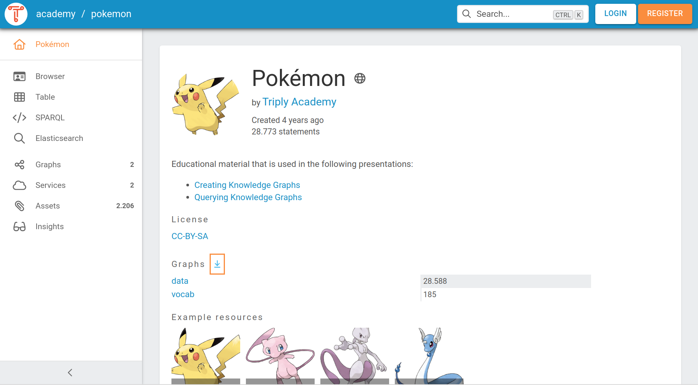
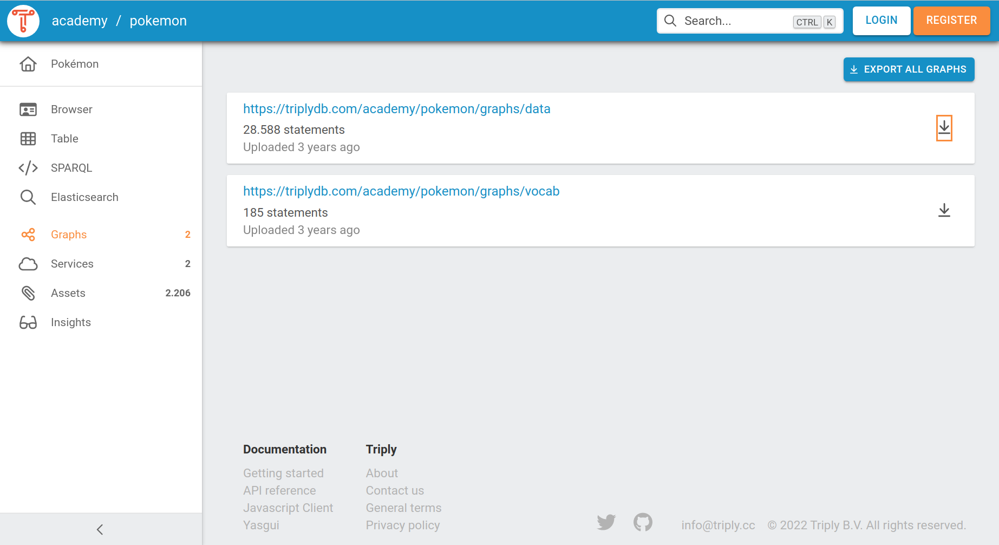
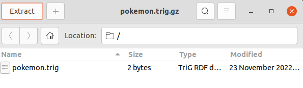

Exporting Data¶
This section explains how a user of TriplyDB can export linked data stored in the triple store.
Export Datasets¶
The data stored on TriplyDB is stored in two different containers: datasets and graphs. Each triple contained in a dataset is part of exactly one graph. A graph is always a part of a dataset and a dataset can have multiple graphs. The following screenshot shows the dataset "Pokémon" that contains three graphs: "data" and "vocab". The graph "data" contains 28.588 triples and the graph "vocab" 185 triples. By summing up the amount of triples contained in the two graphs the dataset "Pokémon" contains 28.773 triples in total.

To export the dataset users can click on the downwards facing arrow. In our example, the dataset is automatically downloaded as the file "pokemon.trig" and compressed with .gz. The name of the file is the name of the dataset. The used serialization format is ".trig" because that is the standard format to store triples that are appended to graphs.
It is also possible to export the whole dataset on the graphs interface. Select "Graphs" and "EXPORT ALL GRAPHS".
Export Graphs¶
To export only one graph select "Graphs" and the arrow next to the graph that should be exported.

In this case the downloaded file "https___triplydb.com_academy_pokemon_graphs_data.trig.gz" is named after the graph and also compressed with "gz".
Extract¶
The process of extracting the compressed file is the same for exporting graphs and datasets. The downloaded and compressed file is automatically stored in the "Downloads" folder. Select the file with the ending ".gz" and open it with a double click. This opens an application that looks similar to the following screenshot:

Select the file that should be extracted. In this case select "pokemon.trig" and click on "Extract". In the following step choose the location where the extracted file should be stored.